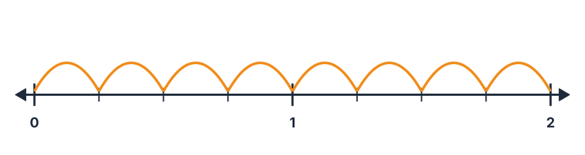

Session 1 · Operations and Algebraic Thinking; Number and Operations in Base Ten
- What is the value of the digit 8 in 13,327.083?MULTIPLE CHOICE(A)0.8(B)8(C)0.008(D)0.08
- Lucia buys 2 bags of popcorn for $0.25 each. What is the total cost?MULTIPLE CHOICE(A)$0.50(B)$5.00(C)$2.25(D)$0.25
- Nia buys a book for $9.28 and one pen for $3.44. Nia pays with one $20 bill. How much change should Nia get?MULTIPLE CHOICE(A)$12.72(B)$7.28(C)$8.28(D)$14.16
- The number line shows jumps of 0.25 from 0 to 2. What is 2 ÷ 0.25?MULTIPLE CHOICE

(A)7(B)9(C)0.5(D)8 - What is the rule for the pattern 1.1, 1.8, 2.5, 3.2, … ?MULTIPLE CHOICE(A)Multiply by 2(B)Add 0.7(C)Add 1.4(D)Add 1.7
- 42 apples are shared equally among 4 baskets. The answer to 42 ÷ 4 is 10 R 2. What does 10 R 2 mean?MULTIPLE CHOICE(A)Each of the 4 baskets gets 10 apples, and 2 apples are left over.(B)There are 10 baskets with 4 apples each and none left over.(C)Each of the 4 baskets gets 11 apples.(D)Each of the 4 baskets gets 2 apples, and 10 apples are left over.
- Pattern A: start at 0, add 2. Pattern B: start at 0, add 8. Which ordered pair (A, B) would NOT be on the graph?MULTIPLE CHOICE(A)(2, 8)(B)(8, 32)(C)(4, 17)(D)(6, 24)
- In 7,426 ÷ 79, what is the greatest place value in the quotient?MULTIPLE CHOICE(A)ones(B)tens(C)hundreds(D)thousands
- Sam buys art supplies for $14.47. Round the price to the nearest ten cents.MULTIPLE CHOICE(A)$14.00(B)$14.40(C)$14.48(D)$14.50
- Look at the two patterns in the table. Which statement is true?MULTIPLE CHOICE
 (A)Each term in Pattern B is 4 more than the matching term in Pattern A.(B)Each term in Pattern B is 9 more than the matching term in Pattern A.(C)Each term in Pattern A is 4 times the matching term in Pattern B.(D)Each term in Pattern B is 4 times the matching term in Pattern A.
(A)Each term in Pattern B is 4 more than the matching term in Pattern A.(B)Each term in Pattern B is 9 more than the matching term in Pattern A.(C)Each term in Pattern A is 4 times the matching term in Pattern B.(D)Each term in Pattern B is 4 times the matching term in Pattern A. - Put the steps for 53 × 44 in order (standard algorithm). A) Add 212 + 2,120 = 2,332. B) Multiply 53 × 40 = 2,120. C) Multiply 53 × 4 = 212.MULTIPLE CHOICE(A)B, C, A(B)B, A, C(C)C, B, A(D)C, A, B
- Which is the best estimate of 3.3 × 3.1?MULTIPLE CHOICE(A)about 910(B)about 6(C)about 90(D)about 9
- Select ALL the problems that are matched with the correct answer.SELECT ALL THAT APPLYPack A has 2 pencils for $2.34. Pack B has 5 pencils for $8.35. Which pack costs less per item? → Pack BPack A has 4 pencils for $5.96. Pack B has 2 pencils for $2.62. Which pack costs less per item? → Pack BPack A has 3 pencils for $2.43. Pack B has 2 pencils for $2.90. Which pack costs less per item? → Pack BPack A has 8 pencils for $4.88. Pack B has 3 pencils for $1.56. Which pack costs less per item? → Pack B
- Select ALL the problems that are matched with the correct answer.SELECT ALL THAT APPLYWhat is 10⁶ written in standard form? → 1,000,000What is 10⁵ written in standard form? → 100,000What is 10⁴ written in standard form? → 100,000What is 10⁵ written in standard form? → 50
- Select ALL the problems that are matched with the correct answer.SELECT ALL THAT APPLY0.74 ÷ 2 → 0.374.97 ÷ 7 → 0.712.94 ÷ 7 → 0.522.24 ÷ 4 → 0.66
- Leo solved this problem. Fill in the blank: 59.3 + ___ = 94.4 Leo answered: 153.7 Find the mistake. What is the correct answer?SHORT ANSWERAnswer:
- Estimate 328 × 21 by rounding each factor to its greatest place value.SHORT ANSWERAnswer:
- Nia solved this problem. Divide: 4,248 ÷ 6 Nia answered: 70 Find the mistake. What is the correct answer?SHORT ANSWERAnswer:
- Dev solved this problem. In 28 × 140, the 140 is replaced by 28. How many times as large is the new product as the old one? Write a fraction. Dev answered: 16 Find the mistake. What is the correct answer?SHORT ANSWERAnswer:
- Field trip. 138 students and 12 adults go on a field trip. Each bus holds 44 people and costs $187.50.CONSTRUCTED RESPONSE · 4 POINTS(a) How many people go on the trip?(b) How many buses are needed?(c) What do the buses cost in all?(d) The cost is shared equally by all the people. How much does each person pay?